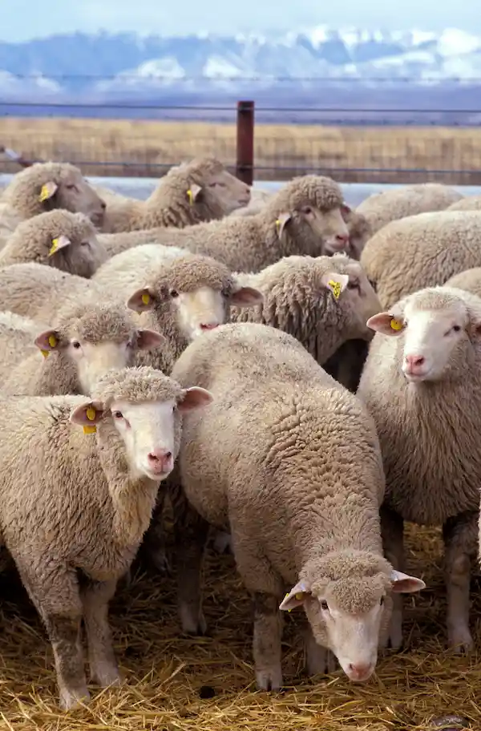
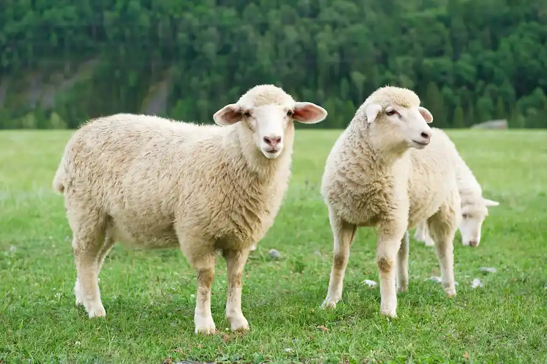

É um animal de enorme importância econômica como fonte de carne, laticínios, lã e couro. Criado em cativeiro em todos os continentes, a ovelha foi domesticada na Idade do Bronze a partir do Urial (Ovis orientalis), que vive actualmente nas montanhas da Turquia e Iraque, ou de outras espécies da ovinos da região.
As ovelhas domésticas são descendentes do muflão-asiático, que é encontrado nas montanhas da Turquia ao Irã meridional.
As ovelhas são, quase sempre, criadas em rebanhos. O manejo requer cuidados, seja pelo fato de se tratar de um rebanho grande, ou por serem animais sensíveis. Nas regiões mais frias, como no sul do Brasil, o cuidado com as crias recém-nascidas deve ser intenso, já que a época de partos coincide com os meses de inverno, quando se tratar de raças que possuem sazonalidade reprodutiva.
Além do frio, os criadores devem atentar para raposas, lobos e outros predadores, que cercam as fêmeas e roubam-lhes os filhotes. A lã, retirada no início do verão, importante fonte de renda para o criador, torna a crescer, garantindo ao animal a sua própria defesa ao frio.
“É a maior espécie de cervídeo das Américas e o único representante de seu gênero, e em breve não existirão mais por conta de nós humanos”
Devem ser alimentados com volumosos de alta qualidade (silagem de milho ou sorgo, capim elefante picado e fenos de boa qualidade), a vontade e ração concentrada, com 16-18% de proteína, na quantidade de 2-4% do peso vivo.
Ovelhas domésticas são ruminantes relativamente pequenos, usualmente com pelagem ondulada denominada lã e muitas vezes com cornos que formam uma espiral lateral. As ovelhas domésticas diferem dos seus parentes selvagens e dos seus ancestrais em vários aspectos, tendo ficado unicamente neoténicos como resultado de cruzamentos selectivos por parte de humanos.